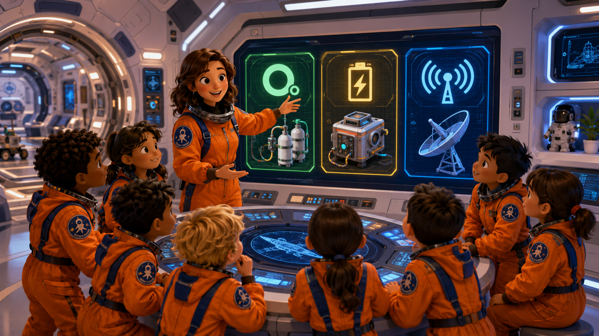

A spacecraft is not one machine. It is a team of systems. Before Step 03, read how oxygen, power, and communication systems help a crew stay safe and report clearly to Mission Control.
우주선은 기계 하나가 아닙니다. 여러 시스템이 함께 움직이는 팀입니다. Step 03 전에 산소 시스템, 전력 시스템, 통신 시스템이 승무원을 어떻게 안전하게 돕고 관제센터에 보고하게 하는지 읽어 봅니다.

Mission Preview: oxygen, power, and communication systems
Before You Start
Read first. Report tomorrow.
In Step 03, you will learn how a spacecraft works. You do not need to memorize every part. You need to understand the job of each system. Then you can explain it in simple English.
Today, you are not only learning words. You are learning how to think like a crew member. A crew member checks systems, notices problems, and reports clearly.
A system is a group of parts that work together.
Step 03에서는 우주선이 어떻게 움직이는지 배웁니다. 모든 부품 이름을 외우는 것이 목표가 아닙니다. 각 시스템이 어떤 일을 하는지 이해하고, 쉬운 영어로 설명할 수 있으면 됩니다. 오늘은 단어만 배우는 것이 아니라 승무원처럼 생각하는 연습을 합니다. 승무원은 시스템을 확인하고, 문제를 발견하고, 짧고 정확하게 보고합니다.
Core Idea
What is a spacecraft system?
A spacecraft has many systems. Each system has a special job. One system gives oxygen. One system gives power. One system helps the crew talk to Mission Control. If one system has a problem, the crew must notice it, explain it, and ask for help.
A spacecraft system is not just one button or one machine. It is a group of parts working together for one important job. Astronauts check systems before, during, and after a mission.
우주선에는 여러 시스템이 있습니다. 각 시스템은 중요한 일을 하나씩 맡습니다. 어떤 시스템은 산소를 주고, 어떤 시스템은 전력을 주고, 어떤 시스템은 관제센터와 대화하게 해 줍니다. 시스템은 버튼 하나나 기계 하나가 아니라, 여러 부품이 함께 일해서 하나의 중요한 일을 하는 장치입니다. 승무원은 미션 전, 미션 중, 미션 후에 시스템을 확인합니다.
Three Main Systems
Oxygen, Power, Communication
Oxygen System
The oxygen system helps the crew breathe. It keeps clean air inside the spacecraft. If oxygen is low, the crew must report it quickly.
Oxygen is not just air. It is life support. The crew needs oxygen every minute. If oxygen is low, the crew cannot stay safe. A good crew reports an oxygen problem quickly and calmly.
Mission Control, oxygen is low. Please advise. Over.
산소 시스템은 승무원이 숨을 쉴 수 있게 도와줍니다. 우주선 안의 공기를 안전하게 유지합니다. 산소는 그냥 공기가 아니라 생명을 지키는 장치입니다. 산소가 부족하면 승무원은 안전할 수 없습니다. 그래서 산소 문제가 생기면 빠르고 차분하게 보고해야 합니다.
Power System
The power system gives energy to lights, computers, radios, and controls. Without power, the crew cannot run important equipment.
Power is electricity for the spacecraft. Lights, computers, radios, fans, sensors, and controls need power. If power is lost, the crew may lose light, computer help, or radio contact. A good crew checks power before using important equipment.
Mission Control, the power system is unstable. Please advise. Over.
전력 시스템은 우주선에 필요한 전기를 줍니다. 조명, 컴퓨터, 무전기, 팬, 센서, 조종 장치가 전력을 사용합니다. 전력이 끊기면 불빛, 컴퓨터 도움, 무전 연락을 잃을 수 있습니다. 중요한 장비를 쓰기 전에는 전력이 안정적인지 확인해야 합니다.
Communication System
The communication system connects the crew with Mission Control. It helps the crew send reports, receive commands, and ask questions.
Communication is more than talking. It is how the crew sends reports, receives commands, asks for help, and confirms safety. If communication is lost, Mission Control cannot hear the crew. A good report must be short, calm, and exact.
Mission Control: Report system status. Cadet: All systems are working. Over.
통신 시스템은 승무원과 관제센터를 연결합니다. 통신은 그냥 말하는 것이 아닙니다. 보고를 보내고, 명령을 받고, 도움을 요청하고, 안전을 확인하는 방법입니다. 통신이 끊기면 관제센터는 승무원의 말을 들을 수 없습니다. 좋은 보고는 짧고, 차분하고, 정확해야 합니다.
System Status
Normal, Warning, Emergency
A crew member must know the difference between a normal system, a warning, and an emergency. The report changes with the danger level.
승무원은 정상 상태, 주의 상태, 비상 상태의 차이를 알아야 합니다. 위험한 정도에 따라 보고 문장도 달라집니다.
Normal
The system is working.
Report: All nominal. Over.
시스템이 정상으로 작동합니다. 보고: 모두 정상입니다. 이상.
Warning
The system has a small problem.
Report: We have a warning. Please advise. Over.
작은 문제가 있습니다. 바로 위험하지는 않지만 확인이 필요합니다. 보고: 주의 상태입니다. 지시해 주세요. 이상.
Emergency
The system is not safe.
Report: Mission Control, we have an emergency. Over.
안전하지 않은 비상 상태입니다. 빠르게 도움을 받아야 합니다. 보고: 관제센터, 비상 상황입니다. 이상.
Systems Officer
Think Like a Systems Officer
A systems officer does three things:
1. Check the system.
2. Notice the problem.
3. Report clearly.
시스템 담당자는 세 가지 일을 합니다. 첫째, 장치를 확인합니다. 둘째, 문제를 발견합니다. 셋째, 짧고 정확하게 보고합니다.
Problem Solving
What if a system is not working?
A crew does not panic. First, they check the system. Next, they report the problem clearly. Then they listen to Mission Control. A good report is short, calm, and exact.
Mission Control, the power system is not working. Please advise. Over.
시스템이 작동하지 않아도 승무원은 당황하지 않습니다. 먼저 시스템을 확인합니다. 그다음 문제를 짧고 정확하게 보고합니다. 그리고 관제센터의 지시를 듣습니다.
Key Words
Words to know before Step 03
systemparts that work together함께 일하는 부품들
oxygenair we need to breathe숨 쉬는 데 필요한 산소
powerenergy for machines기계를 움직이는 에너지
communicationsending and receiving messages메시지를 보내고 받는 것
reporttell important information중요한 정보를 보고하다
workingdoing its job제 역할을 하는 중
problemsomething is wrong문제가 있음
advisegive help or instructions도움이나 지시를 주다
life supporta system that keeps people alive사람의 생명을 지켜 주는 시스템
equipmenttools and machines for a mission미션에 쓰는 도구와 기계
commandan instruction from Mission Control관제센터의 지시
unstablenot steady or not safe안정적이지 않음
emergencya serious danger심각한 위험, 비상 상황
calmnot panicking당황하지 않고 차분함
Check Your Understanding
Answer in short sentences
What does the oxygen system do?
Why does a spacecraft need power?
How does the communication system help the crew?
What should a crew do when a system is not working?
Why is oxygen called life support?
What can happen if power is lost?
Why must a report be short and calm?
What is the difference between warning and emergency?
산소 시스템은 무슨 일을 하나요?
우주선에는 왜 전력이 필요한가요?
통신 시스템은 승무원을 어떻게 돕나요?
시스템이 작동하지 않으면 승무원은 무엇을 해야 하나요?
왜 산소를 생명 유지라고 부르나요?
전력이 끊기면 어떤 일이 생길 수 있나요?
왜 보고는 짧고 차분해야 하나요?
주의 상태와 비상 상태는 어떻게 다른가요?
Mission Report Goal
Tomorrow's report
Practice these reports before class. Say them slowly and clearly.
Normal Report:
The oxygen system is working. The power system is working. The communication system is working. All systems are nominal. Over.
Problem Report:
Mission Control, the power system is unstable. Please advise. Over.
Emergency Report:
Mission Control, we have an emergency. Please advise. Over.
Tomorrow, you will report these systems to Mission Control.
수업 전에 세 가지 보고 문장을 연습합니다. 정상 보고: 산소 시스템, 전력 시스템, 통신 시스템이 모두 작동합니다. 모두 정상입니다. 문제 보고: 관제센터, 전력 시스템이 불안정합니다. 지시해 주세요. 비상 보고: 관제센터, 비상 상황입니다. 지시해 주세요. 내일 여러분은 이 시스템들을 관제센터에 보고합니다.
Parent Homework Check
부모님 숙제 확인
After reading, please ask these short questions. A perfect answer is not the goal. Saying it again is the training.
학생이 글을 읽은 뒤, 아래 질문을 짧게 확인해 주세요. 완벽한 답보다 다시 말해 보는 연습이 중요합니다.
Can you tell me what a spacecraft system is?우주선 시스템이 무엇인지 말해 볼 수 있나요?한국어 도움: 여러 부품이 함께 일해서 하나의 중요한 일을 하는 장치입니다.
Which system helps the crew breathe?승무원이 숨 쉬도록 도와주는 시스템은 무엇인가요?한국어 도움: Oxygen system입니다.
Which system helps the crew talk to Mission Control?승무원이 관제센터와 대화하게 도와주는 시스템은 무엇인가요?한국어 도움: Communication system입니다.
Can you say tomorrow's report one time?내일 보고 문장을 한 번 말해 볼 수 있나요?한국어 도움: 정상 보고 문장을 한 번 말해 보게 해 주세요.
What should you do if a system has a problem?시스템에 문제가 생기면 어떻게 해야 하나요?한국어 도움: 당황하지 않고, 확인하고, 짧게 보고합니다.